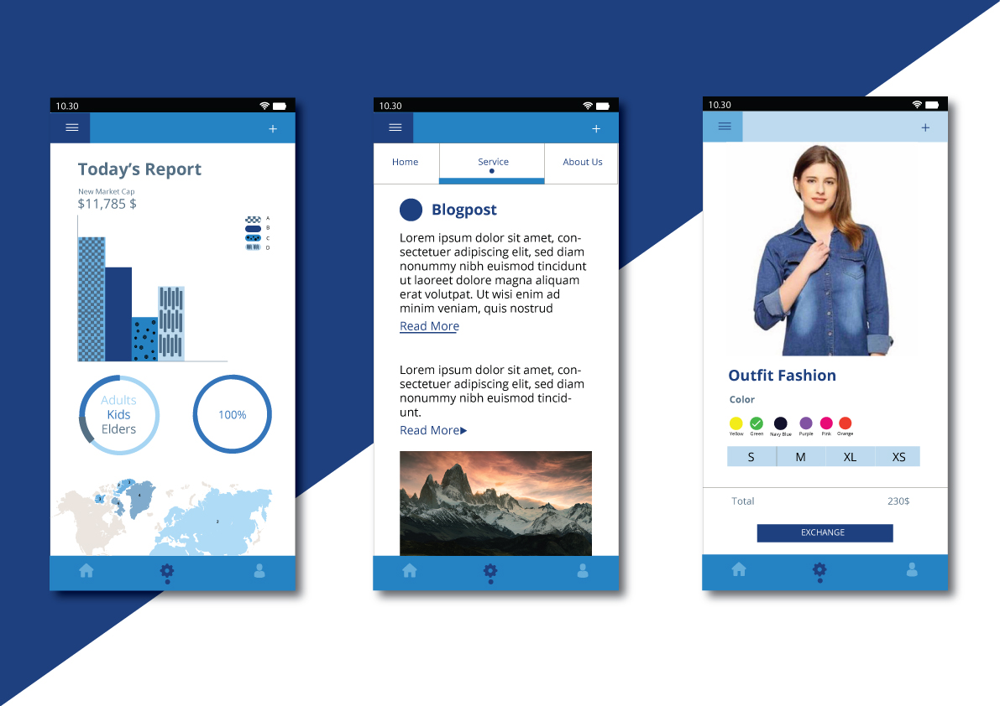
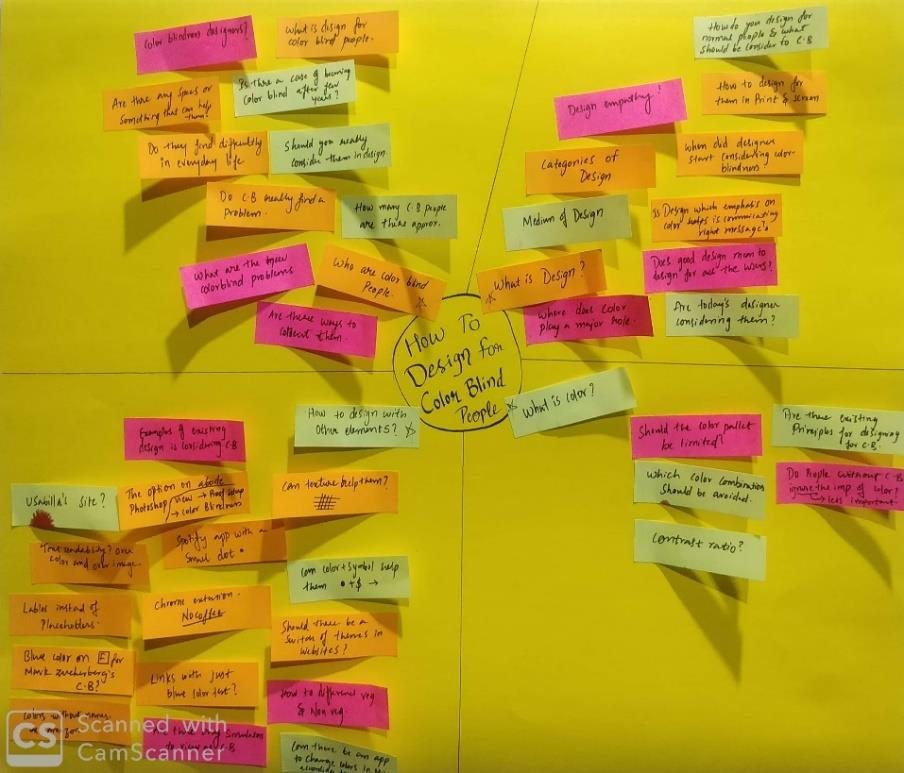
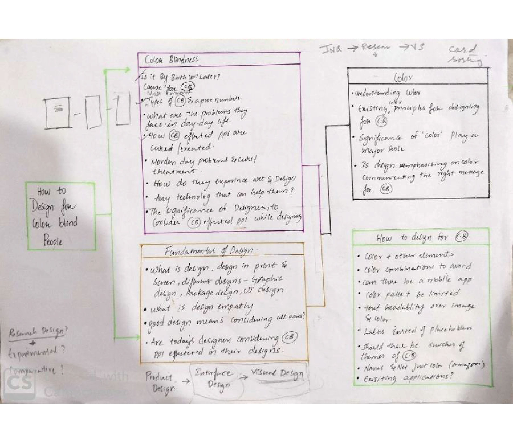
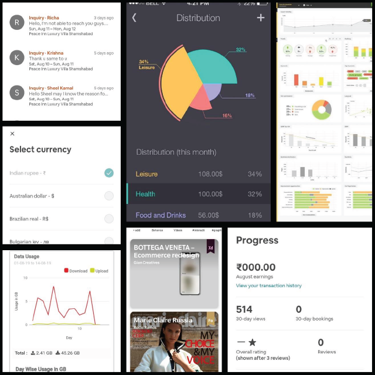
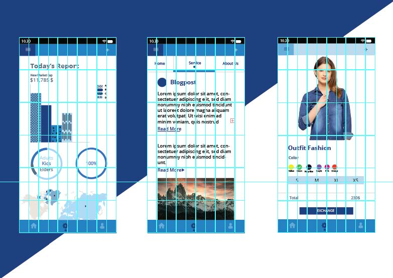
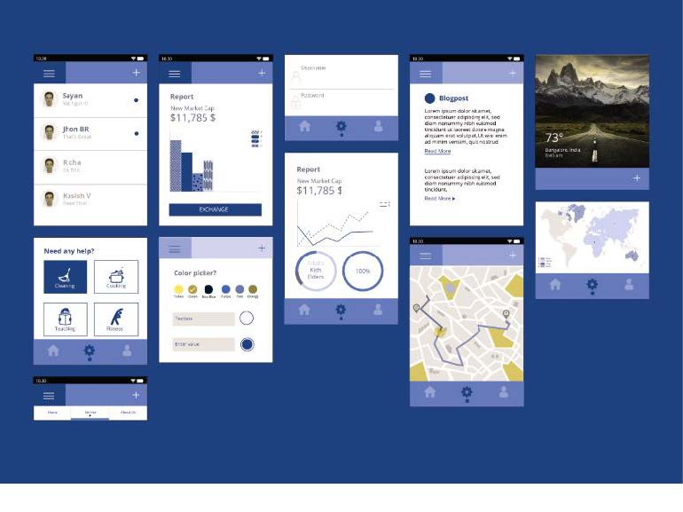
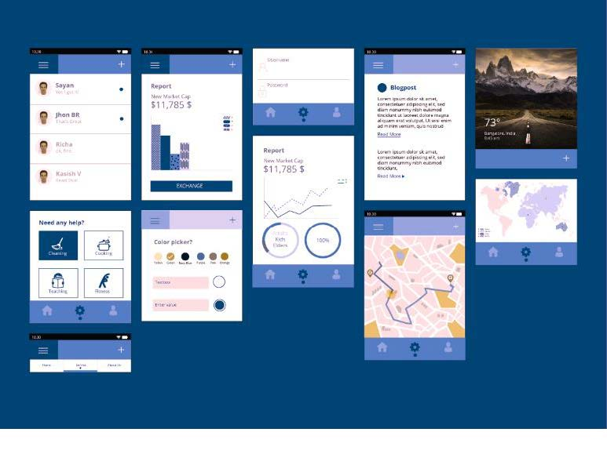
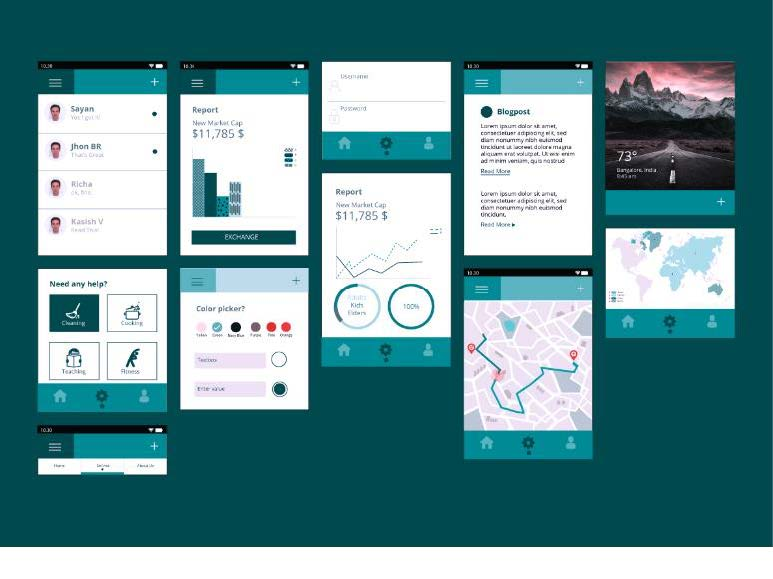
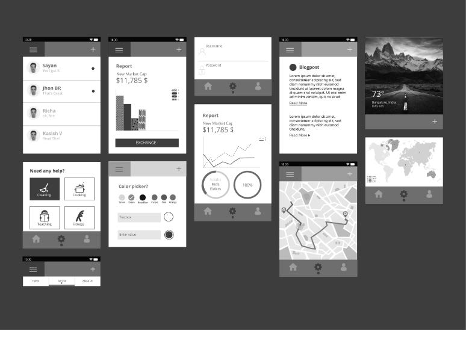

Interface for Colour Vision Deficiency
A research application developed to analyze how the use of colour with other visual elements of design can improve to create a more reliable mobile application interface for Colour Vision Deficiency.
Overview
The research project is an outcome of the studio - Elements of Design. The brief of the task was to propose a research inquiry on the elements and principles of design. The research hypothesis - "Design element colour in isolation, can not communicate the right message to the colour vision deficiency people, hence, it is crucial to combine colour with other visual elements". The outcome is based on the research and rigorous testing of the prototype with the colour-blindness simulator.

The Problem
Colour blindness affects approximately one in twelve men and one in two hundred women that are approximately 5-6% of the entire population. With day to day increase of colour usage in design to communicate vast information, visual communication design plays a major role in conveying the idea and, surprisingly, the designers are rarely considering designing for the accessibility. There are numerous problems faced by people around the world who are affected by colour blindness. As there is no treatment for this yet, it is the designer’s responsibility to make the design accessible for the colour blind. Of all the problems faced by colour-blind people, the focus of this research is to design a better mobile interface. The major problem identified is that colour in isolation can’t help in conveying the information right.
Inquiry
How the use of colours with other visual elements such as point, line, shape, typography, texture, and patterns can improve to designing a more reliable mobile application interface for colour vision deficiency.
Challenge
The major challenge was to finish the project within a week that is to complete the research, design, and testing within the time. Also, the other difficulty was to find the participants with colour vision deficiency. Despite trying to contact the participants through different media and the time being a constraint, the persona of the primary user was constructed based on the research.
Goal
To design a mobile application interface considering the feelings about problems and circumstances faced by a person affected with colour vision deficiency.
User and Audience
The primary target users are the participants who are affected with colour vision deficiency, and the secondary target users are the participants with normal colour vision as the proposed design should be incorporating for both the users.
Discovery and research
Once the problem was identified, it was necessary to estimate the scope of the problem, and further, to break down the research into different phases.
Phase 1 - Understanding the user and the everyday problems faced by them and knowing the deficiency, and it's treatments.
Phase 2 - This phase was about design and design empathy, the importance of the designer in considering the target users while designing a mobile interface.
Phase 3 - Understanding colour significance and the colour pallets in designing for colour blindness.
Phase 4 - To identify the existing initiatives and applications available for the colour blind.
Ideation
The design process started with a mind map by questioning how the colour with other visual elements can help to design a better interface. Below are the mind map and the organized thought process.


With the ideation, the visual outcome is considered to be a mobile application's UI kit and mobile interface screens designed to be aesthetic and user friendly for both the normal vision and the colour vision deficiency. Considering the problems identified, below are the constructed wireframes. In the image, the left wireframe indicates the existing application screen, and the right wireframes indicate the design solution proposed.

Moodboard
Existing application interfaces are considered to evoke the idea, to solve the problem faced by primary users while using them.

Development
Further, the wireframes are developed as follows and the UI kit consist of

The grid used in designing the mobile application screens is 10X6
The shades of blue are considered as they are user friendly for colour blind people
Testing
The designed Mobile UI is tested using the colour blind simulator for all types of colour vision deficiency.

Protanopia – Red/Green colour blindness due to anomalous red cones

Deutanopia – Red/ Green colour blindness due to anomalous green cones

Tritanopia – Blue/Yellow colour blindness due to anomalous blue cones

Monochromacy/ Greyscale
Outcome
Summing it up, the hypothesis considered for the project is valid - colour alone should be avoided to communicate any important information. The use of high and low-value colours can make the user identify the colours undoubtedly. Colours in combination with other visual design elements like dot, line, shape, space, form, patterns, and texture can help the user to understand the message in the best way.
The essential learning, from this project, is to create an empathetic design, and also to spend quality time for the grid layout and typography choice.